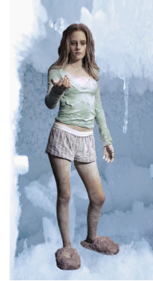

Two boys, Walter and Danny, are left at home in the care of their teenage sister, Lisa, when their father has to go to work. they, who thought the day would be boring, are shocked when they start playing Zathura, a space-themed board game.
They discover that the game has mystical powers when their house is shot out of space. With the help of an astronaut, the boys try to get back home.
Two brothers, Walter (Josh Hutcherson) and Danny (Jonah Bobo), who don't get along at all, are forced to spend a day at home together (in the care of their cantankerous older sister, Lisa (Kristen Stewart)), and soon discover a game in the basement called Zathura. The boys start playing when the game presents a card indicating "Meteor Shower"; in this the house is magically hit by small meteors from space. The brothers soon realize that their entire house has ended up in space, and that all the moves will become real facts as they continue to play Zathura. During the game, Lisa ends up being cryogenized in the bathroom for five rounds, becoming practically invulnerable to the dangers present in the game.
Throughout the story, they need to overcome their anger towards each other so that they can survive and make it to the end of the game. For this, they receive the help of an astronaut (Dax Shepard) who appears as a result of one of the cards in the game. Soon, a ship with the main villains of the film also appears: The Zorgons, alligator-like reptilian aliens who are always in search of warmth and have an insatiable appetite for meat. The Astronaut says that the Zorgons are nomads who, after burning their home planet in order to obtain higher temperatures, travel through space in search of more heat and take a flock of four-eyed sheep in their ships to feed themselves. The Zorgons board the brothers' houseboat and begin hunting its residents.
Walter, Danny and the Astronaut hide from the Zorgons as best they can. The brothers continue playing, and another character appears: a Robot (Frank Oz), who appears at first as a small toy that quickly increases in size. The Robot is supposed to protect the players, but due to a malfunction the Robot starts attacking Walter. Walter then uses a card indicating the function "Reprogram", and soon the Robot begins to destroy the Zorgons. A Zorgon survives the robot's attack, and plans to catch Danny and Walter, who have been wondering where Lisa (already freed from cryogenization) is. She saves the brothers' lives after throwing Danny's piano on top of the giant lizard. After they defeat the Zorgon ship and Lisa settles down and accepts the fact that everyone is in space, it's time for the Astronaut's identity to be revealed.
The Astronaut then reveals that he is a version of Walter from the future. In the past he received a card where he could make a wish on a "Shooting Star", and wished that Danny had never been born - this left Walter unable to finish the game alone, as he had no other player to compete with. This story became the basis (although the viewer only looks at it as if in hindsight) of parallels between the two versions of Walter, including the story being revealed without mentioning his name and that of his brother. He only tells such a story when Walter receives the second "Shooting Star" card, and asks the astronaut to have his brother back, resulting in the appearance of "another" Danny. After Walter from the future greets his brother, the two versions of the brothers unite with the "original version", causing the future without Danny to be erased. Lisa revealed to feel a certain attraction to the Astronaut, and consequently was horrified when she found out that he was an older version of her brother Walter.
Unfortunately, after Walter frees the Astronaut and his brother, a large fleet of Zorgons appears and attacks the brothers' home. It is then that Danny reaches the end and wins the game, giving rise to Zathura: a huge Black Hole. Zathura first sucks up the Zorgons' fleet, then sucks in Lisa and Walter. When Danny is about to be taken away by Zathura, time stops. Moments later, they are back on Earth, and notice that the game pieces (as well as the house, furniture, and themselves) are exactly as they were before the start of the game. The brothers keep memories of the great adventure but agree never to speak of Zathura again.
A few minutes later, as the children get into their mother's car and drive away, one of their bicycles lands on the front lawn, presumably coming from outer space.